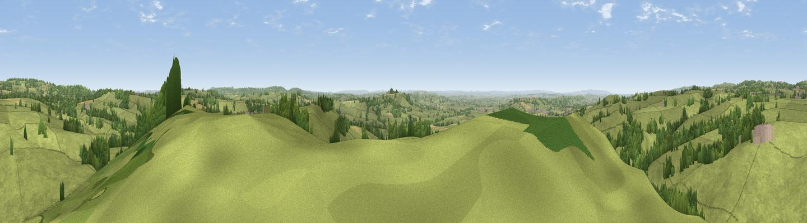

Small Down Knoll
#8163 in England · top 13% of its area beats it · near Stoney StrattonWhere it is
The exact computed spot (ST 66538 40625). Click the marker for map links.
The view, rendered

A 360° render of this exact spot computed from the terrain model, tree cover and land cover — summer colours, afternoon light, calibrated against photographs of famous viewpoints. Real trees, hedges and buildings will differ in detail.
The panorama
Grey silhouette: terrain skyline in each direction (720 bearings, Earth curvature and refraction included). Dashed green: skyline with trees (+15 m) and buildings (+8 m) as obstacles. Blue strip: how far the ground is visible on each bearing.
Where the view opens
Wedge length = distance to the farthest visible ground on that bearing (vegetation-aware). Rings at 10, 25 and 50 km.
What fills the view
84% grassland · 12% woodland · 3% cropland ·
Angular shares of the visible panorama (visual magnitude), not map area. Landscape diversity 0.24 (0–1 Shannon).
Key numbers
More beautiful places nearby
The staircase of upgrades: each row has a higher view potential than everything closer. Driving times are estimates from straight-line distance, calibrated against real road routing — check an actual route before setting out.
| Place | Direction | Drive | Score |
|---|---|---|---|
| Doulting Sheep Sleight | WNW · 3 km | ~7 min | 66.2 |
| Viewpoint near Milton Clevedon | S · 4 km | ~9 min | 73.9 |
| Lamyatt Beacon | S · 5 km | ~10 min | 74.6 |
| Viewpoint near Lamyatt | S · 5 km | ~11 min | 77.8 |
| Beacon Batch | NW · 25 km | ~40 min | 79.4 |
| Bleadon Hill [Loxton Hill] | WNW · 34 km | ~52 min | 79.6 |
| Lewesdon Hill | SSW · 46 km | ~66 min | 83.3 |
| Viewpoint near West Bagborough | W · 49 km | ~70 min | 84.3 |
51.16389, -2.47994 · source: osm peak · position refined by local search. Computed location — check access rights before visiting.